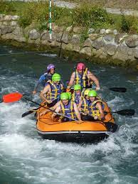

<!DOCTYPE html>
<html>
  <head>
    <meta charset = "UTF-8">
    <meta name= "description" content="This page will display a brief history of our company">
    <meta name=" author" content="Sean C. Tate">
    <meta name="viewport" content=width=device-width, initial-scale="1.0">
    <title>About US| Tate Extreme Rafting</title>
    <link rel="stylesheet" href="styles/rafting.css">
  </head>
</html>
<body>
    <header>
      
      <nav>
        <a href="about.html">About Us</a>
        <a href="contact.html">Contact Us</a>
        <a href="home.html">Home Page</a>
        <a href="trips.html">Trip Offerings</a>
    </header>
    <main>
      <div class="hero">
        
        <h1>Tate Rafting Adventures</h1> 
        <article>
          
          <p><b>Company Purpose: </b>At Tate Rafting Adventures, we harness nature's power to craft amazing rafting experiences. 
            <br><b>Company Mission:</b> We create adventures where people and nature can co-exist.<br><b>Company Motto: </b>Discover Your Inner Adventurer as you Unless the Wild Rapids<br><b>Our Company Creed:<ol><li>Safety First</li><li>We are the Protectors of Nature</li><li>We strive to bring you a trip filled with adventure and thrills</li><li>You will learn collaboration, communication, creative and critical thinking skills</li></ol><br>
      <section>
        <h2>History</h2>
        <p>Tate Rafting Adventures has proudly served adventurers for three decades. Originating as a leisurely river tubing company, our journey has evolved into an exhilarating whitewater rafting experience, fueled by our passion for adventure. Over the years, our commitment to providing unparalleled thrills and unforgettable moments has remained steadfast. While our team of guides may have changed, our board's unwavering dedication to delivering excellence has remained a constant. As we celebrate thirty years of adventure, we reflect on the countless memories made and the countless more yet to come. Our journey continues, driven by the desire to share the excitement of whitewater rafting with every customer who joins us on the river.</p>
      </section>
      <section>
        <h2>Adventure Awaits You at Tate Rafting Adventures</h2>
        
        
        
        
        
      </section>      
    </div>
    </main>
    <footer>
      <p>©️2024 | Tate Rafting Adventures | Sean C. Tate</p>
      <a href = www.instagram.com>
        
      </a>
      <a href="www.facebook.com">
        
        </a>
      <a href="www.tiktok.com">
        
      </a>
    </footer>
</body>